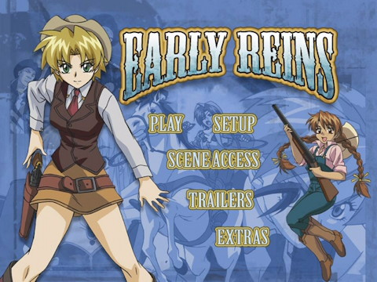

Early Reins Anime Review
{kind=link}
Early Reins
 / OVA / Action / 13-up
/ OVA / Action / 13-up
Bottom Line
Passably creative action, otherwise totally forgettable.
It’s Like...
...An extended action scene of women on a train shooting bandits, starring the entire cast of a dating sim.
Vital Stats
Original Title
Early Reins
Romanized Title
Early Reins
US Release By
Genre
Train-Heist Western
Series Type
OVA
Length
43 minutes
Production Date
2003-02-21
What's In It
Categories
Look For
- Pistol' Packin' Banditas
- The Wild West
- Gatling Guns
- Train Chases
Objectionable Content
- Violence: 3 (significant)
- Nudity: 1 (mild)
- Sex: 2 (moderate)
- Language: 1 (mild)
Plot Synopsis
Margaret Hart is a young sheriff-in-training in the dusty Old West on her way to her first assignment. When a group of bandits attempts to rob the train she's on, Margaret is thrown in with Laura, a seasoned gunslinger, four civilian women, and an injured Union officer working together to defend the train and keep themselves alive.
Quick Review
Switch to Full ReviewEarly Reins doesn't look very substantial, and it's not--a stock girl-riffic action Western boiled down to its essence. The short movie is essentially one long action sequence involving a huge horde of bandits unsuccessfully trying to stop a train full of women and guns. The budget is low, and the required suspension of disbelief is high, but the action actually isn't bad--there's some intelligence and strategy to the shooting. There isn't anything else, though--the technical presentation is unremarkable, there's no setup or plot to speak of, and only two of the colorful cast even mosey by character development. For language, you get your choice of decent but forgettable Japanese or cheesy western accents and some grating minor characters in English.
In the end Early Reins is exactly what it looks like: Generic, passably fun Western action fluff. There's just enough cleverness to the action to keep it interesting, but nothing at all to make it memorable.
Full Review
Switch to Quick ReviewEarly Reins is one of those "out of nowhere" deals--it's not based on anything, isn't part of any series, and pretty much looks like somebody had some money and wanted to make a girls-with-guns flick that doesn't take place in space for once. It doesn't look very substantial, and it's not--a stock girl-riffic action Western boiled down to its essence.
Correction: It's more like one long action scene. It starts out with an extended train-hijacking attempt eventually foiled by the most competent of the women, then quickly moves on to a high-speed-chase/rolling shootout that covers everything but the wrap up. Early Reins omits pretty much all that extra stuff--character establishment, plot, background, "point"--that makes a movie. At least it's a fun way to waste 45 minutes.
The setup, essentially, isn't. Location: Some dusty place. Setting: Nondescript train en route to unspecified destination. Plot: There are a collection of random passengers on a train, and bad men try to rob it. After the robbers jettison the males, a group of colorful women are left to try and fend off an astoundingly large gang of semi-competent bandits. Really, that's all there is to it, unless you count a glob of random drama at the very end.
Only two of the characters have even a hint of substance: The ornery, sardonic, one-eyed gunslinger, who's notably more mature and businesslike than your average anime babe (sort of a female Lee Van Cleef from "For a Few Dollars More"), and a spunky young wanna-be Sheriff who spends the film learning that justice in the Wild West means shooting first and worrying about making arrests if anybody happens to survive. Most of the other characters only have a handful of lines and don't even get named until halfway through. There's a chipper crack-shot farm girl, a mature, kindly nurse, a saloon singer, and a stuck-up rich girl who for some inexplicable reason takes well to a gatling gun, none of whom have enough screen time to even mosey by character development. The only significant males are a crusty old engineer and a Union soldier with some flavor, but neither does much.
Giving the cast its due, they're a colorful and capable lot, and not just the women; the Union soldiers on the train at the beginning aren't incompetent or goofy, nor are the train robbers--a couple of short-lived villains early on could have passed for main bad guys. The maturity level of most of the cast is a pleasant surprise, and even the three young girls on the train are treated as such--they're basically kids, and act the part.
On the negative side, once Early Reins moves into full-on "defend the train from bandit assault" mode, the requirement for suspension of disbelief goes way up. I didn't count, but the huge gang consists of at least several dozen well-armed bandits on horseback who're not only able to keep up with a steam train running full-bore but seem remarkably willing to continue hurling themselves at it despite being mowed down en masse by a gatling gun. Yeah, money is a powerful motivator, but a boxcar bristling with guns is a pretty powerful deterrent (especially when the train is headed for a dead-end anyway).
But hey, this is a pure-action anime Western with an all-female cast--suspension of disbelief is a given, and you're not watching it for the involved story.
A bit surprisingly, the action isn't bad. Early Reins doesn't have much in the way of budget, but at least there's some intelligence to the shooting--not everybody is a good shot, and the group thinks things through instead of just blasting away randomly. There are also nice touches, like knocking holes in both sides of the boxcar since they don't know which side the bandits will attack from, and not-entirely-unlimited ammunition.
Past that, there's not much to speak of, and what is is uneven. The character animation ranges from decent to stiff depending on the shot, and while the artwork on the main characters is nice enough, some of the bandit horde is crudely drawn. The character designs are appealing and varied, if generic. The backgrounds--mostly rugged, dusty hills--look like they might be a strong point from the intro, but there's not much to see in the rest of the flick. Those early shots do pull off a very good job of making partly-CG backgrounds look very much like entirely hand-painted ones, and the train at the center of things is also a decent-looking computer model, but it doesn't blend as well with some of the hand-drawn shots interspersed with CG work.
The voice acting in Japanese is decent, with a passably distinctive collection of voices, although there's little drama and no memorable performances. The only noteworthy voice is Aiko Mitsumori as Laura, who is a little pleasant-sounding for a seasoned, eyepatched gunslinger. A quick listen to the English dub tells me that there's plenty of western twang and whooping bandits--an obvious advantage, given the subject matter--but the accents are inconsistent, the writing weak, a couple of the girls have rather grating voices, and the engineer sounds flat-out goofy. Since it's not exactly what you'd call an authentic Western anyway, on balance I'd say the more even Japanese comes out ahead.
The music is slightly above-average upbeat Western movie stuff; far from original, and the main theme has somewhat cheap-sounding synthesized instrumentals, but there are a couple of nice bits hiding elsewhere. The train sound effects aren't bad, either.
In the end Early Reins is exactly what it looks like: Generic, passably fun Western action fluff. There's just enough cleverness to the action to keep it interesting, but nothing at all to make it memorable.
Have something to say about this anime? Join our newly-resurrected forums and speak your mind.
Related Recommendations
In terms of "girls, guns, and light action" the closest matches that come to mind are Gunsmith Cats (modern, more plot), Gundress (sci-fi, more plot, some mecha), Burn Up and its spin-offs, and maybe Sol Bianca (the original OAV only, also sci-fi and more plot). Mood-wise you could toss in Plastic Little, Tokyo Vice, and maybe Riding Bean. There's very little in the way of anime Westerns; Trigun is a sci-fi take on the genre, as are some of the Leji Matsumoto universe spin offs, particularly Gun Frontier and Queen Emeraldas, although none have much else in common with Early Reins.
Notes and Trivia
According to Anime News Network, the original concept of Early Reins was for a dating sim of all things; that project apparently was cancelled before it got off the ground, but the character concepts (with the exception of a requisite Native American girl who isn't in the anime) were re-used for this one-off anime production.
Early Reins was released straight to DVD in Japan; the title is written in English even on the Japanese packaging.
The gunslinger Laura is voiced by Aiko Mitsumori, a '90s-era Jpop singer-songwriter. It's her only anime role (or other showbusiness activity since the '90s, for that matter) that I can find.
The making-of featurette shows that a couple of shots make use of a computer-modeled 3D landscape with hand-painted textures, a technique that at the time Early Reins was made was usually only seen in drastically higher-budget productions, most notably some Ghibli films.
US DVD Review
The DVD has a bright, fairly clean transfer (much better than some of AnimeWorks' other DVDs of the era, although there's still a touch more color noise than you'd expect in an all-digital production like this), and similarly clean stereo sound in both languages, plus a subtitle track. Extras consist of a textless opening and ending sequence and a "making of" video that demonstrates (in relatively dry detail) how the computer models of the train and scenery were done.

Parental Guide
AnimeWorks calls it 13-up, and that seems about right mainly on account of a reasonable amount of blood and a high body count.
Violence: 3 - It's not gory, but there is definitely some blood to go with all the shot-up bandits.
Nudity: 1 - A few mildly revealing outfits.
Sex/Mature Themes: 2 - The bandits briefly manhandle some of the women early on.
Language: 1 - A sprinkling of mildly coarse language.
Availability
Available in North America on bilingual DVD from AnimeWorks.
Looking to buy? Try these stores:
RightStuf (search) |
AnimeNation |
Amazon